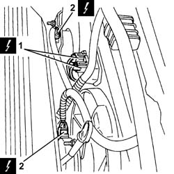
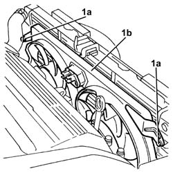

1088E11 FANS WITH SINGLE ENGINE DUCT - R+R
- Path
- Procedures > 10 ENGINE UNIT > 1088 ENGINE COOLING > 1088E COOLANT TEMPERATURE CONTROL DEVICES > 1088E11 FANS WITH SINGLE ENGINE DUCT - R+R
- Kind
- repair procedure (removal / refitting; the operation number is the code)
- Applies to
- engines: 3.2 V6; all production periods
- Interactive page
- https://sloeber94.github.io/elrnDB-aGt/en/#/125001190
Applies to: engines: 3.2 V6; all production periods
 Removing
Removing
 Refitting
RefittingProceed with removal
Op. 7055B54 UNDER-ENGINE GUARD - R R
Proceed with removal
Proceed with removal
Op. 7055B64 LH OR RH REFLECTOR(ONE) ON REAR BUMPERS - R R
Proceed with removal
Proceed with the removal
Op. 7055B42 LH OR RH REFLECTOR(ONE) ON REAR BUMPERS - R R
(Right and left sides).
Proceed with removal
Proceed with removal
- 7210A15 R.R. HEADLAMP HOUSING/FRONT WING CROSSMEMBER
1. Disconnect the electrical connections from the resistances for the engine cooling fans.
Op. 5540B76 FRONT LIGHT CLUSTER WITH FOGLAMP ONE LH OR RH R R WITH INTERFERING PARTS REMOVED
2. Disconnect the electrical connections from the engine fan motors.
Op. 7025A34 BONNET LID LOCK (ONE) - R+R OR REPAIR
Name | Connector | |
|---|---|---|
1 | Engine fan adjustment resistor | See O10 ENGINE FAN ADJUSTMENT RESISTOR - 1 |
Name | Connector | |
|---|---|---|
1 | Engine fan adjustment resistor 2 | See O12 ENGINE FAN ADJUSTMENT RESISTOR -2 |
Name | Connector | |
|---|---|---|
2 | Engine electric fan motor | See N11 ENGINE FAN MOTOR - 1 |
Name | Connector | |
|---|---|---|
2 | Engine fan motor 2 | See N12 ENGINE FAN MOTOR - 2 |

Applies to: engines: 3.2 V6; all production periods
1. Undo the bolts (1a) and remove the fans with the single cooling duct (1b).

Applies to: engines: 3.2 V6; all production periods
Refitting
RemovingPlace the fans with the single engine cooling duct back in their housings and secure them using the bolts.
Connect the electrical connections to the engine fan motors.
Connect the electrical connections to the engine cooling fan resistances.
Proceed with refitting
- 7210A15 R.R. HEADLAMP HOUSING/FRONT WING CROSSMEMBER
.
Proceed with refitting
Op. 7025A34 BONNET LID LOCK (ONE) - R+R OR REPAIR.
Proceed with the refitting
Op. 5540B76 FRONT LIGHT CLUSTER WITH FOGLAMP ONE LH OR RH R R WITH INTERFERING PARTS REMOVED
(Right and left sides).
Proceed with refitting
Op. 7210E10 R.R. FRONT BUMPER.
Proceed with refitting
Op. 7055B42 LH OR RH REFLECTOR(ONE) ON REAR BUMPERS - R R.
Proceed with refitting
Op. 7055B64 LH OR RH REFLECTOR(ONE) ON REAR BUMPERS - R R.
Proceed with refitting
Topics linked from this page (6)
- 5540B76 FRONT LIGHT CLUSTER WITH FOGLAMP ONE LH OR RH R R WITH INTERFERING PARTS REMOVED
- 7025A34 BONNET LID LOCK (ONE) - R+R OR REPAIR
- 7055B42 LH OR RH REFLECTOR(ONE) ON REAR BUMPERS - R R
- 7055B54 UNDER-ENGINE GUARD - R R
- 7055B64 LH OR RH REFLECTOR(ONE) ON REAR BUMPERS - R R
- 7210E10 R.R. FRONT BUMPER